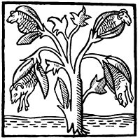
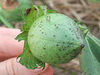
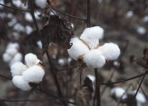
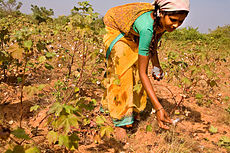
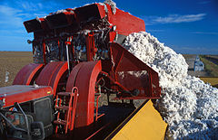
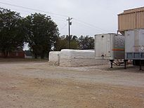
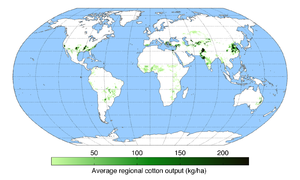

Бавовна
Зміст
- Етимологія
- Історія
- Будова волокон
- Властивості волокон
- Переваги
- Недоліки
- Збір і обробка бавовни-сирцю
- Використання
- Виробництво в світі
- Виробництво в Україні
- У культурі
Етимологія
Сучасне українське слово бавовна походить від ст.-укр. баволна[2]. Воно запозичене з нім. Baumwolle через посередництво чеськ. bavlna та пол. bawełna. Німецьке слово утворене від Baum («дерево») + Wolle («вовна») — внаслідок поширеної тривалий час у Європі хибної думки, що бавовна росте на деревах. Українська форма зумовлена зближенням зі словом вовна[3].
Англійська назва cotton походить через старофр. coton від арабської назви qutun, яка означає «бавовняне волокно» і має, очевидно, давньоєгипетське походження. Іспанська назва algodón має ту саму етимологію[4].
Історія
Бавовна є одним з найстаріших природних матеріалів — людина використовує його понад 12 тисячоліть.[5] У 2002 р. бавовну вирощували на площі 330 000 км² в «теплому поясі» земної кулі і отримали 21 млн тонн сировини.[5]
Використання бавовни як сировини для виробництва тканин почалось пізніше, ніж виникло льонопрядіння. Це пояснюється тим, що відносно невелика довжина волокон бавовни вимагала для її обробки складнішої техніки.[6].
Водночас розмаїття видів бабовнику дозволило його одомашнити мешканцям різних континентів незалежно один від одного.
Вже початку VI тисячоліття до н. е. з бавовника барбадоського робили тканину в Перу — у місцевості Уака-Пріета. Згодом — в VI—IV тисячоліттях до н. е. у Мексиці одомашнили бавовник звичайний, наприкінці VI тисячоліття до н. е. в Нубії (теперішньому Судані) — бавовник трав'яний, а в долині Інду — бавовник деревоподібний[7].
Першим знаряддям для очищення бавовни від насіння в Індії була так звана «чурка», яка складалась з двох валків, причому верхній був нерухомий, а нижній обертався рукояткою. Бавовна з насінням подається між валиками, валик захоплює волокно і протягує його на другу сторону, а насіння, яке не може пройти між валиками, відривається і падає попереду. При цій операції два-три змінних робітники могли очистити за день не більш 6—8 кг чистої бавовни. Тому про велике і дешеве виробництво бавовни не могло бути й мови.
Будова волокон
Бавовняне волокно — найчистіша природна целюлоза — містить 85-90 % целюлози.[8] Бавовна являє собою тонкі, короткі, м'які пухнасті волокна. Волокно кілька разів скручено навколо своєї осі. Бавовна-волокно має вигляд дуже подовженої тоненької в багатьох місцях перекрученої трубочки. Всередині волокна по усій його довжині проходить вільна порожнина — канал. Зверху волокно покрите тоненькою оболонкою — кутикулою. У місці, де волокно прикріплене до насінини, канал виходить на поверхню. Інший кінець бавовняного волокна поступово звужується і щільно закритий. У кожному зразку бавовняного волокна існує значна різниця по виду, товщині, ширині каналу, ступені скрученості.[9]В будові бавовняного волокна розрізняють три головні частини:
- кутикула — тонка захисна оболонка, що покриває волокно ззовні; напівпроникна мембрана. За хімічним складом відрізняється від клітинної целюлозної стінки більшою стійкістю до дії різних реагентів (лугів, відбілювачів і т. ін.). Кутикула нестійка до кислотних обробок;
- клітинна целюлозна стінка волокна. Клітинна стінка неоднорідна і має складну будову. Вона складається з великої кількості концентричних шарів або, як деякі дослідники називають «шарів росту». Процес відкладання целюлози відбувається безперервно, але швидкість його змінюється від температури і від умов освітлення. Окрім структури, обумовленої концентричною шаруватістю волокна, в ньому часто можна спостерігати признаки іншої структури — спіральної.[9]
При руйнуванні волокно часто розпадається на дрібні довгасті паличкоподібні частинки.[9]
У процесі розпаду волокна спостерігається, що шари складаються із частинок, розташованих не за віссю волокна, а по спіралям вздовж волокна. Такий розпад волокна спостерігається при набуханні волокон під дією деяких хімічних реагентів. Крім того, складність будови бавовняного волокна проявляється при спостеріганні волокна в сірчаній кислоті — розчинна властивість кислоти проявляється нерівномірно до різних місць клітинної стінки, що може бути признаком наявності в стінці волокна так званих поперечних елементів.[9]
Таким чином при різних обробках волокна виявляються різні признаки його структури; - канал волокна, заповнений залишками клітинного соку чи повітрям.
Властивості волокон
Для бавовни характерні відносно висока міцність, хімічна стійкість (волокно довгий час не руйнується під впливом води і світла), теплостійкість (130—140 °C), середня гігроскопічність (18-20 %) і мала частка пружної деформації, внаслідок чого вироби з бавовни сильно мнуться. Стійкість бавовни до стирання невелика.
На одній і тій самій насінині бавовника волокна мають різну довжину і властивості.[9] Довжина волокон бавовни різна — від 10,3 до 60 мм.[10] Бавовняне волокно тонке (середня товщина 20—22 мк), але дуже міцне (витримує навантаження 4,5-5г).[10] Воно дешеве, добре фарбується.[10]
У волокна існує певне співвідношення між зовнішнім виглядом і його віком. На цьому засновано методи визначення зрілості бавовняного волокна шляхом мікроскопії: бавовняний лінт обробляють лугом, промивають водою і після цього фарбують конго-червоним барвником. Цим досягається вельми чітке розділення всіх волокон на чотири групи.[9] Фарбування конго-червоним дає додаткові признаки для розрізнення волокон середнього ступеню зрілості.
Переваги
- М'якість
- Хороша поглинаюча здатність в теплу пору
- Легкість фарбування
- Здоровий, натуральний матеріал
- Не шкідливе для здоров'я
Недоліки
- Легко мнеться
- Має тенденцію до усадки
- Жовтіє на світлі

Збір і обробка бавовни-сирцю
Бавовник пишно розростається. У висоту піднімається вище пояса людини. Квітка цвіте тільки один день і залишає після себе плід, схожий на маленьку зелену коробочку[11] на три, чотири або п'ять гнізд.[12] Коробочки яйце- або кулеподібні зверху якої є дзьобик, по якому вони розкриваються. В плоді розвиваються білі нитки, якій й називаються бавовною. Розвиток бавовняного волокна розпочинається з дня цвітіння бавовника.[9] Ріст і розвиток клітин бавовника триває до 70 днів. Коли плід бавовника дозріває, коробочки лопаються, а довгі (25—36 мм) ніжні нитки висовуються з плодів і звисають як вата.[11] У дикорослого бавовника відсутнє, або дуже коротке волокно. На рослині може бути до 100 коробочок, а в кожному гнізді коробочки 5-11 насінин.[12]
Більш дозріле і вкрите довгими (волокно) і короткими (підпушок) волокнами насіння нижніх суцвіть.[12]
Початковий період розвитку волокна характеризується тим, що воно росте в довжину і складається лише з кутикули в протоплазми. Перші суттєві відкладення целюлози починаються на 15-й — 17-й день після цвітіння.[9] Волокна різного віку характеризуються товщиною целюлозної стінки. Чим «старше» волокно, тим товстіша його стінка. При висиханні волокно різко змінює свою форму. Однорідність у зовнішньому вигляді зникає і спостерігається дуже велика різнорідність зовнішнього вигляду; форма, яку волокна отримують після висихання визначається товщиною клітинної стінки.
Урожай бавовника збирають в міру розкриття коробочок. Дозрівання коробочок триває 1,5-2 місяці, що заважає одночасному збиранню врожаю. Урожай збирали і руками, складаючи бавовну у фартух. При ручному зборі отримується найменш забруднена домішками бавовна-сирець.[9] Поява перших бавовнозбиральних машин, яка навішувалася на трактор, давала змогу за один прохід збирати бавовну з двох поруч розташованих рядків рослин і за день збирати бавовну з 2,8 га, чим замінювала 20 збирачів.[13] Складалася вона із кущепідіймачів, двох збиральних апаратів, двох вентиляторів, повітроводів і бункера. До заморозків бавовну-сирець збирають 2—3 рази, після першого заморозку — ще один раз з розкритих коробочок, а потім збирають всі коробочки, що не розкрилися. На полях, призначених для механізованого збирання, попередньо проводять дефоліацію (видалення листя хімічними препаратами) і після цього вже приступають до збору
.Волокно разом з насінням — бавовна-сирець — збирається на бавовноприймальних пунктах, звідки його відправляють на бавовноочисний завод, де відділяють волокна від насіння. Вміст насіння і волокна в бавовні-сирцю коливається в межах 25-35 % волокна і 68-70 % насіння.[9] При переробці бавовникового насіння на бавовноочисних заводах, в процесі відділення волокна від насінин проходить розділення волокнистого покриття на три види: довге волокно (довжина 22—25 мм і більше йде для текстильної промисловості); більш коротке волокно довжиною від 3-8 мм до 20—22 мм, так званий бавовняний лінт; підпушок або дуже коротке бавовняне волокно.[9]
Найбільш довгі волоски від 20—25 мм і є бавовна-волокно. Коротші волоски — лінт — йдуть на виготовлення вати, а також для виробництва вибухових речовин.
На заводах бавовна-сирець машинним способом очищається від насіння.[11] Відділення бавовникового насіння від бавовикового лінту проходить в лінтерувальних машинах, і після багаторазового лінтерування насінин бавовника на їх поверхні залишається ще достатньо велика (3-7 % за вагою) кількість зовсім короткого волокна, так званого «підпушника» чи делінту.[9]
Очищену бавовну пресують у тюки і перевозять на текстильні фабрики.[11]
Волокно бавовни після очищення його від насіння, домішок воску і протеїну складається практично з чистої целюлози — природного полімеру.
    Використання
Бавовна — ліквідний товар, що має стабільний попит. Приріст виробництва бавовни у світі становить близько 2 % на рік. Протягом останніх 10 років виробництво бавовни виросло на 24 %, урожайність — на 44 %, споживання — на 48 %.[14]
З бавовни отримують тонку, рівномірну і міцну пряжу і роблять з неї найрізноманітніші тканини — від найтонших до товстих оббивних тканин.[10] Волокна бавовни найчастіше переробляють в нитку (використовують для одержання пряжі), яку використовують для виготовлення м'якого, «дихаючого» текстилю, з якого шиють одяг, найпоширеніший серед видів одягу з натурального волокна, білизну, рушники, застосовують як сировину для виготовлення штучних волокон, як вихідний продукт для одержання нітратів целюлози — колоксиліну, піроксиліну, з яких, у свою чергу, продукують целулоїд, лаки, динаміт, бездимний порох тощо. Бавовна використовується для виробництва штучного скла, целофану, фото- і кіноплівки, лінолеуму, фурфуролу.[6]
В склад текстильних матеріалів бавовна може входити поряд з іншими волокнами: у суміші волокон льон-бавовна, льон-бавовна-капрон, льон-бавовна-лавсан, льон-бавовна-лавсан-віскоза та ін..[15]
Технологічний процес виготовлення продукції в бавовняній промисловості є нетривалий і у прядильному виробництві займає 3-5 днів: проходить 5-10 стадій обробки, готовим продуктом є пряжа різних тексів (номерів);
у ткацькому — 10 днів: пряжа обробляється на 6-7 стадіях і кінцевии продуктом є сурова тканина, а в обробному 5-6 днів: сировина надходить у вигляді суров'я, яке проходить більш як 10 операцій.[16]
Бавовняний лінт слугує сировиною для хімічної переробки в ацетати і ксантогенати. Для отримання гомогенних ацетатів целюлози використовується коротке волокно довжиною 3-6 мм, при отриманні гетерогенного триацетату целюлози можливе використання більш довгого волокна.
З спеціального паперу з бавовни та льону виготовляються сучасні банкноти. Для виготовлення національної валюти України — банкнот гривні — використовується 100 % бавовняний папір.[17]
Виробництво в світі
Станом на 2016 рік на бавовняних полях Узбекистану і Північної Кореї все ще систематично використовується примусова праця.[18]
Виробництво в Україні
В Україні вирощування бавовнику розпочалось в 1930 в Причорномор'ї — Херсонській, Миколаївській, Запорізькій, Одеській, Дніпропетровській і Донецькій областях, — в 1952 посівні площі його вже становили 475 тис. га, але з 1956 в зв'язку з успішним розвитком бавовнярства в Середній Азії, Казахстані та на Закавказзі бавовносіяння в Україні було призупинено.[12]
В СРСР (посівна площа під бавовник перевищувала 2 млн га, а врожай бавовни-сирцю 20 ц/га) вирощували близько 20 районованих сортів з різними біологічними і господарськими властивостями. В підвищенні врожайності бавовника і зниженні затрат праці по догляду за посівами великого значення набуває застосування квадратно-гніздового способу сівби і механізація збирання бавовни.
В Україні бавовняні комбінати функціонують у Херсоні (ВАТ «Херсонський бавовняний комбінат») й Тернополі (ВАТ «Текстерно»); бавовнянопрядильний комбінат — у Донецьку, Львові, Долині; прядильна фабрика — у Полтаві, ватноткацька — в Києві, ткацькі фабрики — у Чернівцях, Івано-Франківську, Коломиї, Коростишеві та Радомишлі, ниткова фабрика — у Нікополі. Виробництво бавовняних тканин за період 2003—2008 рр. було загалом стабільним, коливаючись у межах 0,7-1,1 м² на рік.
В України відсутня власна сировинна база. Науковці працюють над можливістю розв'язання проблеми забезпечення бавовною за рахунок відновлення її вирощування на півдні України. Результати досліджень доволі суперечливі. Іноземними фахівцями на міжнародному семінарі у Китаї ще у 2005 році був зроблений категоричний висновок, що текстильна промисловість України фактично не має власної сировинної бази.[21]
Тому й учасники наради бачили майбутнє України як посередника у просуванні на європейський ринок товарів текстильної промисловості Китаю.[20] При радянському ладі Україна одержувала бавовну переважно з Узбекистану (найбільші площі були зайняті в Узбекистані — 61 %[6]), Туркменістану.
Досвід минулих років показав, що частина степових районів України цілком придатна для бавовносіяння. 1930 р. продукція бавовни з 1 га перевищувала вартість зернової продукції в 10 разів. Так, бавовник на півдні Україні в Цюрупинському, Скадовському, Голопристанському, Очаківському районах і в Криму вже в 30-ті роки ХХ ст. став головною серед інших технічних і просапних культур[22].
1951 року врожайність бавовнику в більшості господарств України становила 21 ц/га, тоді як в інших країнах світу вона була на рівні 3,4 — 11,5 ц/га[22]. У середньому за 1929—1955 рр. врожайність бавовни-сирцю в умовах зрошення становила 13,7 ц/га, без зрошення — 8,9 ц/га. Проте, в наступні роки почалося скорочення посівів і 1958 р. повністю було припинено вирощування бавовнику в Україні, що було пов'язано з переорієнтацією стратегії економічного розвитку СРСР і вольовим рішенням керівництва країни.
Природні та екологічні умови на півдні України близькі до умов вирощування бавовнику в Болгарії, де він дає високі врожаї щороку як в умовах зрошення, так і на суходолі.
В Україні бавовна віднедавна вирощується на дуже обмежених площах в південних регіонах — в Криму, Херсонській, Дніпрі та Одеській областях.[23]
Станом на 2010 рік бавовна є основною сировиною в Україні, що імпортується для виробництва текстильних виробів.[24] Найбільшу частку текстильної сировини та тканин, що імпортуються, становить бавовна.[25] Скорочення її імпорту можливе через виробництво пряжі з котонізованого льоноволокна в суміші з бавовною, що приводить до зменшення на 40-50 % в імпортній бавовні.[25]
У культурі
- Про бавовну знято науково-популярний фільм «Бавовна» («Київтехфільм», оператор Георгій Єфремов)
- (Документальний фільм)(рос.) Золото для партії. Бавовняна справа. Режисер: Ірина Чернова. Країна: Росія [Архівовано 26 грудня 2012 у Wayback Machine.] "Хлопковое дел..." на YouTube [Архівовано 26 червня 2014 у Wayback Machine.] [джерело?]
- «12 Років рабства». Режисер: Стів Макквін, країна: США, Велика Британія
- Під час російського вторгнення в Україну став поширеним інтернет-мем про «бавовну», пов'язаний з тим, що приблизно з 2019 року в російських державних ЗМІ слово «взрыв» ( укр. «вибух») почали заміняти на «хлопо́к» (укр. «ляск») для створення режиму інформаційного сприяння[26][27]. Українці створили каламбур та заради жарту почали перекладати слово «хлопок» як «бавовна» (рос. «хло́пок»), і це слово стало відомим інтернет-мемом, що позначає дивні вибухи на території Росії чи на окупованих територіях[28][29]. Згодом почали з'являтись навіть іронічні вирази, такі як «почастувати бавовною», що є евфемізмом на умисний підрив чого-небудь чи кого-небудь (наприклад, склад боєприпасів, російський офіцер чи колаборант).